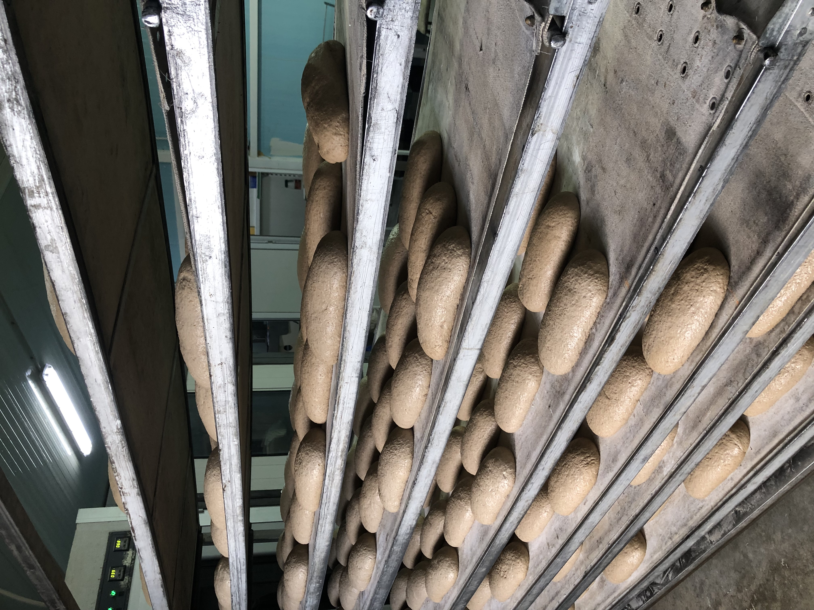
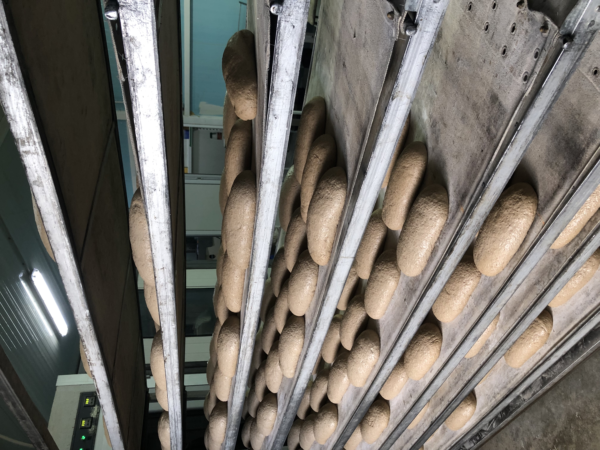
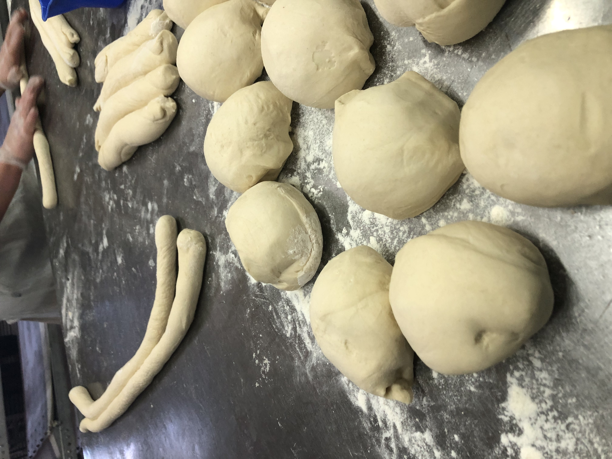
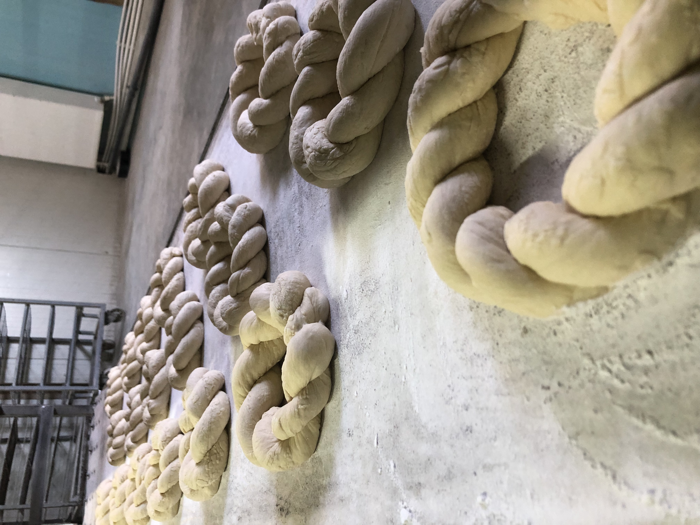

Explorează procesul de creare a pâinii!
Pregătirea aluatului

Procesul de prepare a aluatului pentru pâine, colaci, hulubași, ciururi și alte produse ,se realizează cu dragoste și străduință de către lucrătoarele ce silesc de cu zor.
Pregătirea pâinii pentru dospit
 

Dospirea este procesul care transformă aluatul într-o pâine ușoară și pufoasă, odihnindu-se un anumit timp . Pâinea nedospită este cunoscută sub numele de lipie și este cea mai apropiată ca formă de pâinea pe care o consumau strămoșii noștri.
Punerea pâinii în cuptor
Se pune pâinea în cuptor pentru 30 de minute (în dependență de temperatură), se lasă să-și i-a rostul.
Scoaterea pâinii din cuptor

Pâinea din cuptor se scoate de persoane speciale , punând-o pe stative speciale pentru a se răcori. Apoi unele pâini merg la feliat , iar altele la ambalat pentru a fi duse la magazine sau alte comenzi.
Pregătirea ciururilor

Ciururile se pregătesc la comandă. Într-un ciur sunt 5 colăcei (ca în imagine). Aceste ciururi se fac pentru pomenirea morților , trecând prin anumite ritualuri religioase.
Pregătirea colacilor
Avem toate temeiurile să credem că pregătirea colacilor precede cu mult istoria cuvântului, care nu e, defel, scurtă. Astfel, în pictura murală din templele egiptene descoperim mereu forma inconfundabilă a colacilor, printre ofrandele dăruite zeilor. La moldoveni există un întreg meniu cerealier funerar, iar colacul pare-se că, alături de colivă, a avut mai întâi această destinaţie alimentară, legată de sensurile dintâi biblice, de ofrandă.
Pregătirea porumbeilor


Acum a devenit o traditie foarte frumoasă în orice familie , în apropierea primăverii, împreuna cu copiii coacem porumbei din aluat dospit. Porumbelul este o pasare gingașă, ce a fost din totdeauna aducatorul veștilor bune, mesagerul dragostei si bucuriei, simbolul păcii si al prieteniei.